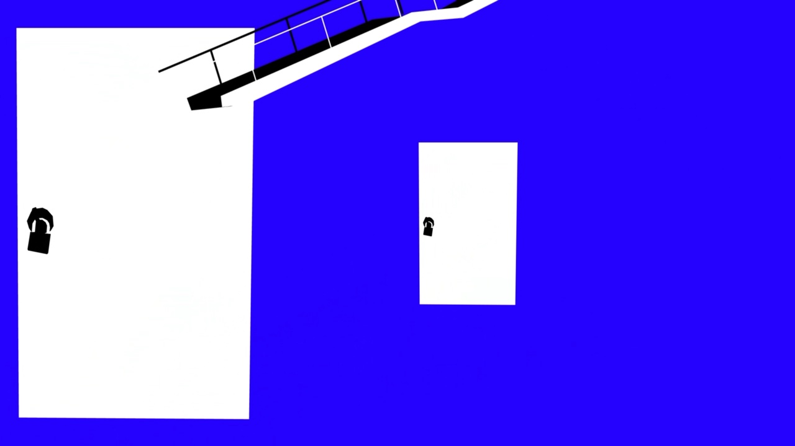
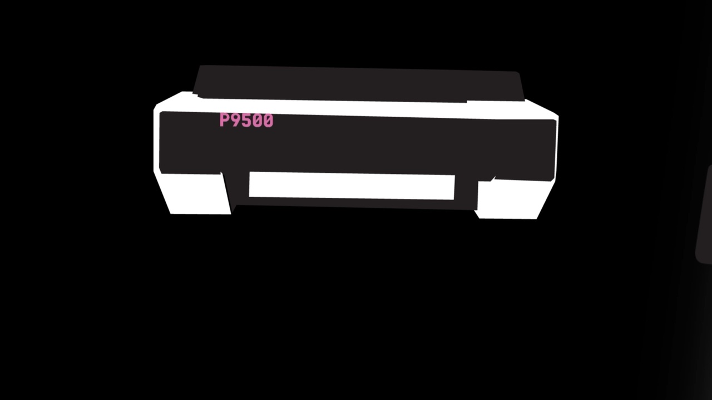

Title Sequence
- Year
- 2025
- Role
- Character design & animation
- Tools
- After Effects, Illustrator
- Collaborator
- Galia Frid
- Instructor
- Ari Amit
The Idea
This is a title sequence for a series that doesn’t exist, made as a one-month exercise in a video course for designers. The brief asked for at least 40 seconds of opening, with the story left open. We invented a show about a student who gets tangled in a dark network of prints at Bezalel. The challenge was to let the sequence tell the viewer what the series is about and what it feels like, without words, in one consistent paper-cut look and a limited palette of blue, red, black and white.
Process
We started by researching Saul Bass-inspired title sequences, including the opening of Catch Me If You Can. From it we learned about sharp transitions, characters as shapes, and a clear rhythm. We translated that into color: the sequence opens in a blue world, steps into a darker, black world of printers and computers when we enter the locker, and then moves through a phone into a redder, more mysterious world. Each color shift is a step deeper into the story.
We wrote the plot before producing any assets, so every scene was defined before we started drawing. We split the work by strengths: I took the characters, and Galia took elements like the printer and the typography. We chose the music together. Galia found a jazz track that nods to thrillers, crime and drama, fast but not too fast. Once it was locked, we tightened the motion to the beat: elements enter and exit on the beat, and scene transitions are timed to the rhythm.


Decisions
One unified style: we both created assets, so we set a single look to carry the whole project.
Paper-cut language: we chose it because it had a clear reference, which made the work easier.
Four-color palette: color separated the worlds and also drove the story forward.
Story before production: every scene was defined before we started drawing.
Music sets the pace: every movement was built around the beat.
What I’d Do Differently
This was one of my first motion graphics projects, before I took any animation courses. Today I’d apply more animation principles, especially more interesting entrances and exits for objects. For example, the sheet of paper moving between the printers looks too mechanical, and I’d give it more life. This project is what opened my curiosity about motion.
Credits
Animation & design - Adel Fitoussi & Galia Frid
Instructor - Ari Amit
Bezalel, 2025